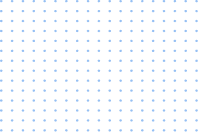
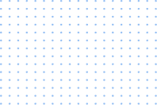

I just want to say how thankful I am to meet these guys, especially Evgeny Kim. I was lucky enough to get in touch with them during my job search process, and I immediately received huge support. I received answers for all of my questions before the bootcamp even started. I can honestly say that these guys care and are willing to help you all the way until you find your dream job.
Kate T
QA Automation Engineer
Thank you Evgeny and Denis for such an amazing, super helpful, and very well-structured course. My favorite thing in this course was the amount of real-life practice and every day control from the teachers. I got 2 offers, and then got my job in 2 weeks. One of the most important aspects getting a job is an interview, so personal Skype calls helped a lot. Thank you again, and I wish you and your students all the best!
I was surprised by how the complexity of the course auto adjusts to the level and professional interest of each student. If the goal is to learn test automation 101 and penetrate the market – the boot camp is for you. If you already have significant experience but want to learn some specific skills – the boot camp is for you as well. I’ve been working almost a decade in test engineering, including low-level automation, and have seen so many un-scalable, poorly implemented, crappy testing frameworks… Don’t go that road, go to TestPro way instead.
Nadia M
Software Developer in Test
I was lucky and happy be your student. You make my vision of QA very clear. I feel like the last couple of years I really was working on projects! It gives me more confidence and understanding of workflows. And I found a lot of friends and good people here!
Yo! Thanks Evgeny Kim and Test Pro crew to make it happen for me. Basic QA course was the best investment in my entire life! My company wants to promote me to QA Automation Lead now. They have decided to create a new SDET position just because of me - something like TestOps. I wish you had a course on How to negotiate salary raise 😀
Andrew B
QA Automation Engineer, Los Angeles
Hi! I had an interview today in a company. They called me in ONE hour and gave me an offer! I'm so happy! Thank you guys for everything! You are cool! I'm planning to drive to Tampa tomorrow for a meetup to see you in person. Thanks a lot one more time and keep doing what you are doing!
Yana V
QA Analyst, Fort Lauderdale
I was surprised by how the complexity of the course auto adjusts to the level and professional interest of each student. If the goal is to learn test automation 101 and penetrate the market – the boot camp is for you. If you already have significant experience but want to learn some specific skills – the boot camp is for you as well. I’ve been working almost a decade in test engineering, including low-level automation, and have seen so many un-scalable, poorly implemented, crappy testing frameworks… Don’t go that road, go to TestPro way instead.
Dennis D
Sr QA Engineer, Los Angeles
I was lucky and happy be your student. You make my vision of QA very clear. I feel like the last couple of years I really was working on projects! It gives me more confidence and understanding of workflows. And I found a lot of friends and good people here!
Irina
QA Analyst, Los Angeles
My first work day of 8 and a half hours has gone. A lot of work - Automation, Mobile, Web. Browserstack, Postman, Jira, Selenium, Oracle DB... It was so cool to realize that all they showed to me today I already knew and worked with. Marina explained and showed it all during the course and now it is the same but all day long. And the secret about QA job - I liked it so much! It is just WOW! I had no single question today. We know everything. I'm so grateful to Test Pro team for that. No fear! PS: And dresses are allowed 🙂
Tanya K
QA Engineer, Washington DC
I made it! I'm so happy to share the latest news! I've achieved one the most important goals for this year! After three months of intensive boot camp I got promoted to QA Automation Engineer! It is another level of my career. I'm so-so-sooo happy! Thanks Test Pro and Azat!
Maria K
QA Automation Engineer, Los Angeles
I got to know about Software Quality Assurance because of Portnov Computer School but Test Pro helped me to get into it. Marina pushed me to the limits, so I could get that opportunity. The least thing I can do now is to spread the word about Test Pro!
Dmitry Y
QA Analyst, Louisville
Test Pro has managed to create not just a great product but customer support as well! It is not that difficult to create a good product these days because everything is available online. Sales are manageable too. But after-sales service is what really makes the difference.
Rufat N
QA Analyst, Los Angeles


 
